※このサイトは宿題の手順専用です。
※このサイトを参考にして何が起こっても自己責任でお願いします。
※多分もっと楽な方法もあると思うので、あくまで参考程度にどうぞ
まずe-statの市区町村データページにアクセス
市区町村データを選択し、データ表示をクリック
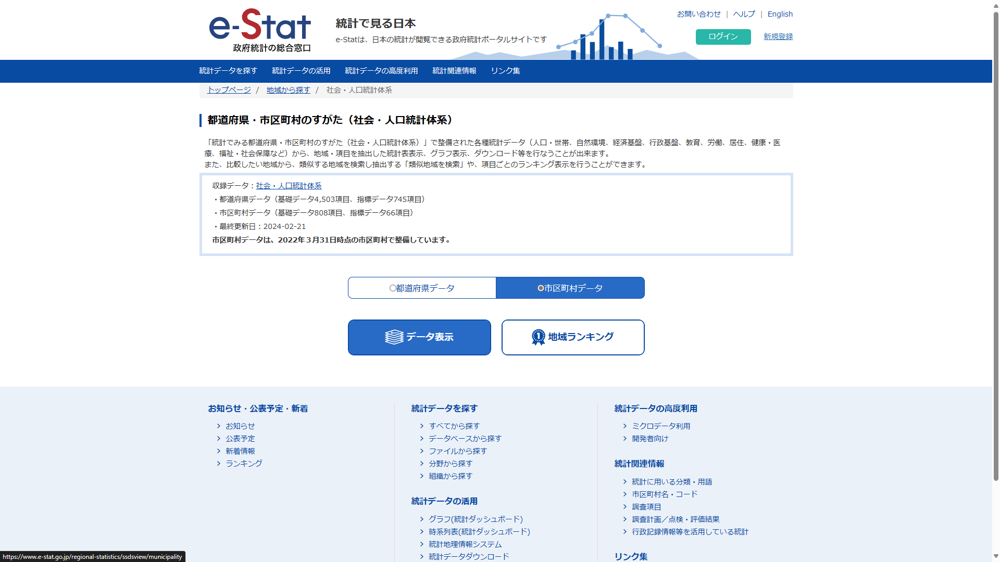以下のようにして確定をクリック
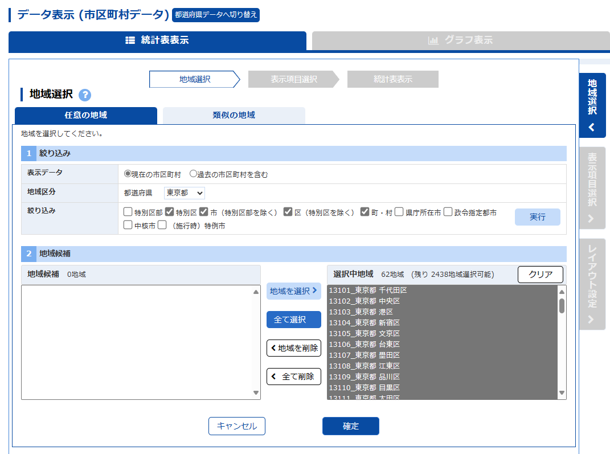欲しいデータを選んで確定
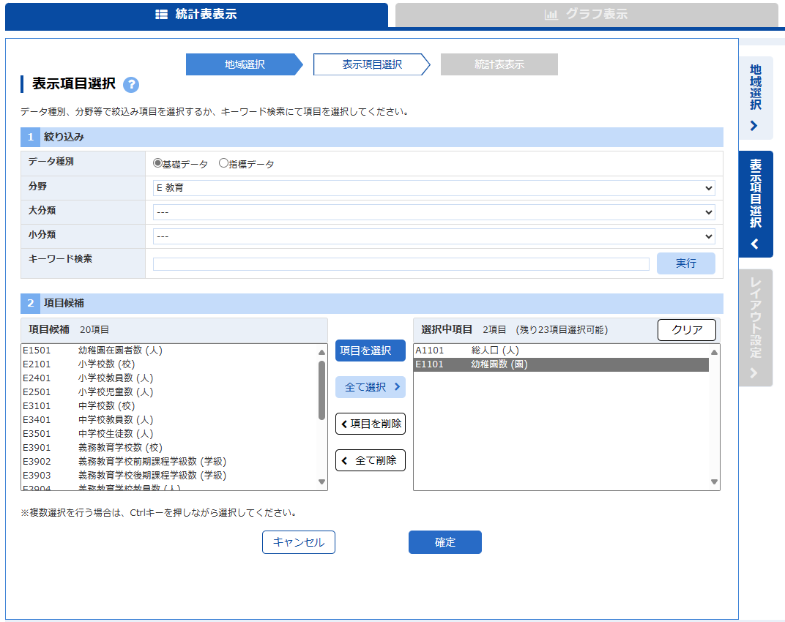右上のダウンロードをクリック
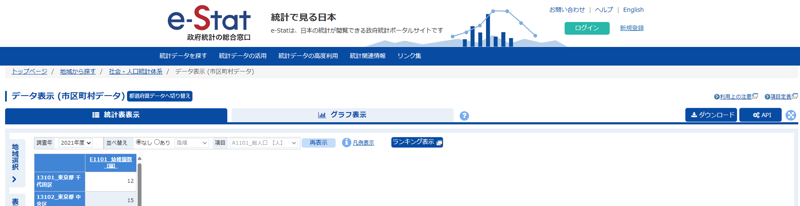新しいウィンドウが出てくるので、設定項目を以下のようにしてダウンロード
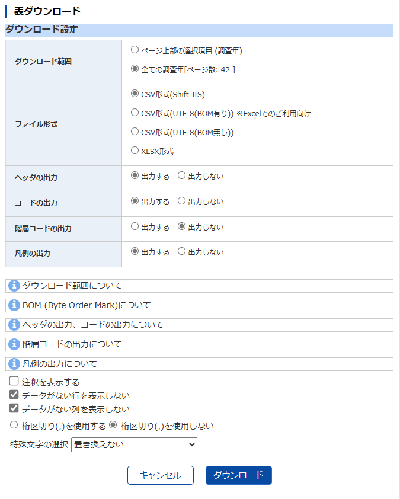この後画面が変わり、もう一度「ダウンロード」と出てくるので、クリックするとダウンロードできる
こんなのがダウンロードできれば成功
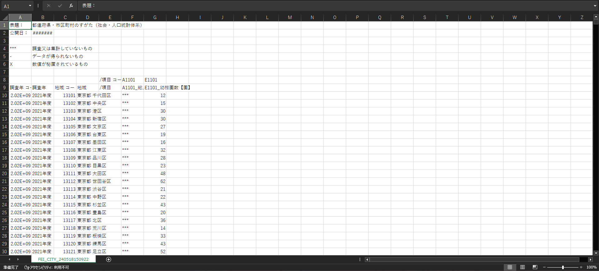まずはテンプレをダウンロード
こんなのがダウンロードできたと思います。(色はついてきません)こいつを編集してmandaraデータを作成します
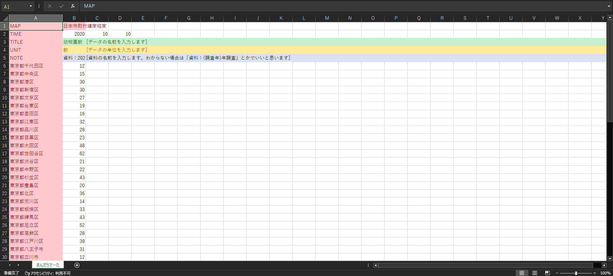赤色の部分は編集してはいけない部分です。ここいじると読み込めなくなります
緑色の行はデータの項目名を書きます。
黄色の行は緑色の行で指定した項目の単位を書きます
青色の行は資料の名前を書きます
その下の数字の部分は集めたデータの数字です
編集する上で邪魔だと思うので、[]で囲まれた注意書きや幼稚園数のデータは消してもらって大丈夫です
まずはB2(B列の2行目)を選択し、ダウンロードしたデータの年(西暦)を半角で入力します。デフォルトでは2020になってます
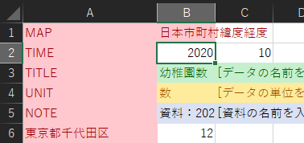e-statからダウンロードしてきたファイルに戻り、B列を見ながら使う年度のデータを確認して、全市町村分のデータをコピーします
自分は今回は2020年度の総人口(男女)をコピーしました
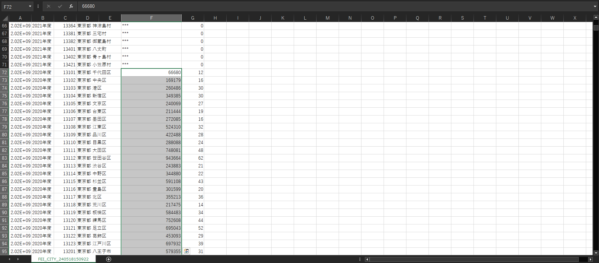テンプレに戻り、データの名前(全角ok)、単位(全角ok)、資料の名前(全角ok)を入力していきます
単位の入力に関してはmandaraの公式サイトのテンプレファイルを参考にしてください
最後に、データを入れたい列の6行目を選択し、先ほどコピーしたデータを貼り付けます
基本データの順番は全て同じだと思いますが、万が一市区町村名の順番が違う場合もあるかもしれないので、不安な方はだるいけど一つずつ確認してください。編集する場合は半角数字で入力してください
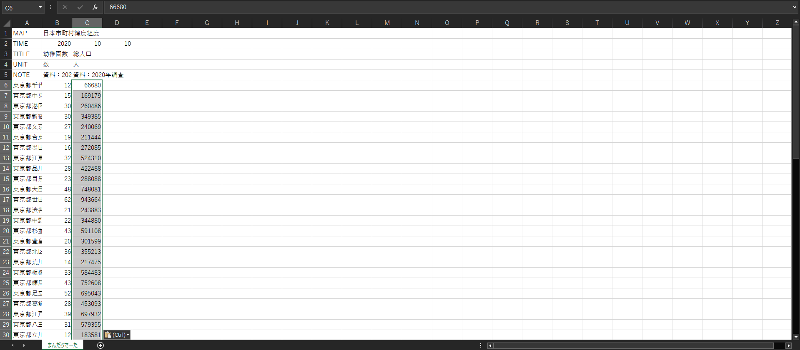あとはプリントに書いてある手順でクリップボードから読み込めばデータを使うことができます。重ね合わせ表示もしっかり使うことができます
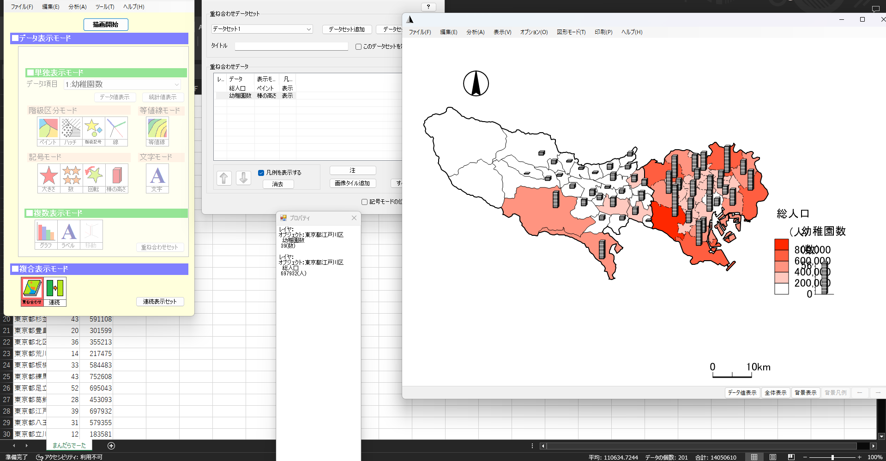これのどれかを少しでも破れば読み込みできません。「お前の手順通りにやったのに」って方はもう一度見直してみてください。それでもできなければこのサイトのせいかもしれません。ごめんなさい
ひょっとしたらmandaraの中のファイルを何か消してしまっているかもしれません。この方法ではmandaraの中のファイルがダウンロード時と同じものが入っているのが前提なので、プリントの手順に従ってもう一度入れなおすのも手です。だるいのでおすすめはしませんが
わかりづれぇサイトですが少しでも参考になれば幸いです。